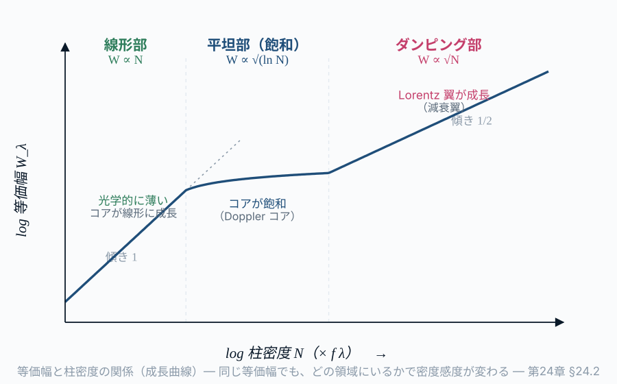

第24章 線スペクトルから天体物理を読む
この章の主題：第20-23章で整備した線スペクトルの逆引き道具（Einstein 係数・占有数・振動子強度・線輪郭）を、現実の観測解析 に動員する。視線速度・化学組成・温度・密度・電離度・磁場・宇宙論的赤方偏移という、線スペクトルが直接読ませてくれる物理量 を体系的に整理し、第VII部を閉じる。これは第VI部（連続スペクトルの応用）と対をなす、線スペクトル側の実務章である。
この章の中心地図
水素線スペクトルの地図 ― 二層構造
第一層：イコニック・アンカー（リュードベリ公式）
\frac{1}{\lambda} = R_\mathrm{H} \left( \frac{1}{n_1^2} - \frac{1}{n_2^2} \right) \tag{27.1}
線スペクトルの「骨格」を一目で示す。R_\mathrm{H} は基本定数の組合せ、1/n^2 は束縛状態のエネルギー、離散性が「線が存在する理由」を語る。
第二層：構造的マップ（Hα を標準例とした線吸収係数）
\alpha_\nu = \frac{\pi e^2}{m_e c} \, f_{lu} \, n_l \, \phi(\nu - \nu_0) \tag{27.2}
| 因子 | 物理的意味 | 対応する章 |
|---|---|---|
| \alpha_\nu | 観測量（線吸収係数） | 第21章 |
| \pi e^2 / m_e c | 古典極限の線強度 | 第22章＋第VIII部 |
| f_{lu} | 振動子強度 | 第22章 |
| n_l | 下準位の占有数 | 第21章＋Part III |
| \phi(\nu - \nu_0) | 線輪郭（自然・Doppler・Voigt） | 第23章 |
| \nu_0 | 線位置（リュードベリ） | 第22章 |
適用範囲（重要）：この式の前因子 \pi e^2/m_e c と振動子強度 f_{lu} は、古典 Lorentz 振動子に対応する 電気双極子（E1）許容線 に対するものである。21 cm 線（基底状態超微細構造の 磁気双極子 M1 遷移）や 禁制線（E2・M1 など） では、この前因子・f_{lu} をそのまま使えない。これらの線では、測定された自発放出率 A_{ul} から Einstein 関係を介して有効遷移強度（B_{lu}）に読み替える（式 29.3 の構造は保ったまま、強度因子だけを差し替える）。
方針：本章は「逆引きの結果としての観測道具」の章。中心地図 \alpha_\nu = (\pi e^2/m_e c) f_{lu} n_l \phi(\nu-\nu_0) の各因子から、どんな物理量が読めるかを再整理し、観測の具体例で確認する。
本章の応用を俯瞰するため、「観測で見える特徴 → 最小モデル → 逆引きされる物理量 → 破れる仮定」の対応を最初にまとめておく。
| 観測で見える特徴 | 最小モデル | 逆引きされる物理量 | 破れる仮定 |
|---|---|---|---|
| 線中心のシフト | 非相対論的 Doppler | 視線速度・赤方偏移 | 高 z（相対論・宇宙膨張）、線ブレンド |
| 等価幅 | 成長曲線（curve of growth） | 柱密度・化学組成 | 飽和、non-LTE、未解像の微細構造 |
| 禁制線の線比 | 二準位＋衝突の励起平衡 | 電子温度・電子密度 | 臨界密度近傍、温度非一様 |
| 多重電離段階の線比 | 電離平衡（Saha・光電離） | 電離度・電離パラメータ | 非平衡電離、幾何の不定性 |
| 線輪郭の幅・分裂 | Voigt＋Zeeman | 温度・乱流・圧力・磁場 | 速度場の重畳、視線方向の混合 |
この章で答える問い
- 線の中心振動数のシフトから、どんな速度情報が読めるか
- 等価幅と成長曲線（curve of growth）から元素組成を測る手順は
- 線比（line ratio）から温度・密度を診断する原理は
- 高赤方偏移 QSO のスペクトルからは、宇宙の何が読めるか
- 系外惑星大気の線スペクトルからは、何がわかるか
到達目標
この章を読み終えると、読者は次のことができるようになる：
- 線の中心シフトから視線速度と宇宙論的赤方偏移を測れる
- 等価幅と成長曲線（curve of growth）から元素組成を求める手順を組み立てられる
- 線比診断（[O III]、[S II] 等）から電子温度と密度を分けて測れる
- 第VII部の中心地図が、観測 → 物理量の 網羅的逆引き地図 であることを実感できる
24.1 視線速度 ― 線中心のシフト
[本文目安：B1-B2]
線スペクトルの最も基本的応用は 視線速度測定：観測される線中心 \nu_\text{obs} と実験室での既知の値 \nu_0 の比較から、Doppler シフト
\frac{v_\parallel}{c} = \frac{\nu_0 - \nu_\text{obs}}{\nu_0} \quad (\text{非相対論的}) \tag{27.3}
これだけで多くの応用が可能：
- 連星系の軌道：成分星の視線速度変化 → 質量比、傾き → 質量
- 銀河の回転曲線：21 cm 線や H\alpha 線の視線速度マップ → ダークマター存在の証拠
- 宇宙論的赤方偏移：z \equiv (\nu_0 - \nu_\text{obs})/\nu_\text{obs} で定義され、銀河の距離尺度（Hubble 法則）
- 系外惑星検出：恒星の視線速度の周期的揺らぎ → 惑星の存在
注意（観測）：宇宙論的赤方偏移 z を v_\text{recession}/c と書くのは z \ll 1 の低赤方偏移近似のみ で正当化される。一般相対論的には、宇宙論的赤方偏移は時空計量のスケール因子比
1 + z = \frac{a(t_\text{obs})}{a(t_\text{emit})}
で定義され、単純な Doppler 速度ではない。z \gtrsim 0.1 では特殊相対論的 Doppler 公式や宇宙論モデル（\LambdaCDM）に依存した距離–赤方偏移関係を使う必要がある。本書は線スペクトル応用を主眼とし、宇宙論の詳細は専門書（Dodelson & Schmidt 等）を参照
問い：太陽の周りを地球と同じ軌道半径で公転する木星質量惑星は、太陽にどのくらいの視線速度ゆらぎを起こすか？
短答：v_\star = (M_p/M_\star) v_p \simeq (10^{-3}) \cdot 30 km/s = 30 m/s。Doppler 法での系外惑星検出の典型感度（HARPS, ESPRESSO 等）はサブ m/s 〜数 m/s で、これは十分検出可能。地球質量同等の惑星検出には \sim 10 cm/s 感度が必要で、これは現在の最先端
もう一歩：視線速度測定の精度は、線中心の決定精度に依存する。Voigt プロファイルの中心を \sim 10^{-3} \cdot \Delta\nu_D レベルで決定できれば、~10 m/s レベルの速度精度が得られる
24.2 化学組成 ― 等価幅と成長曲線（curve of growth）
[本文目安：B3]
恒星・星間ガス・QSO 視線方向の 化学組成 を測る古典的方法。手順：
- 観測：吸収線スペクトルから等価幅 W を測る（複数の線、複数の元素）
- 成長曲線（curve of growth）：第21章 §21.6 から W \to N（柱密度）の換算
- 正規化：水素柱密度を基準とし、相対組成 N_X/N_H を求める
- 太陽組成との比：[X/H] = \log_{10}(N_X/N_H) - \log_{10}(N_X/N_H)_\odot

応用例：
- 銀河化学進化：金属量 [Fe/H] と \alpha 元素過剰 [\alpha/Fe] から、銀河中で星形成と超新星爆発が起きた タイムスケール が読める
- QSO 吸収系：高赤方偏移の 金属吸収系（C IV, Mg II, Fe II 等）→ 宇宙初期銀河の化学組成
- 系外惑星宿主星：金属量と惑星形成の相関 → 「金属に富む恒星は巨大惑星を持ちやすい」という観測法則
注意（観測）：等価幅から組成を求めるとき、成長曲線のどの領域に線があるかで誤差源が変わる：
- 線形領域：誤差は等価幅の測定精度（連続光のフィット精度に依存）
- 飽和領域：N への感度が落ちる、ほぼ無用
- 減衰翼領域：感度回復、しかし衝突幅の理論計算誤差が新たな誤差源
優れた組成解析は 複数の線（弱・中・強） を組み合わせて、成長曲線全体を観測点で押さえる。
24.3 温度・密度診断 ― 線比の原理
[本文目安：B3]
二つの異なる線の 強度比 I_1/I_2 は、しばしば 温度のみ または 密度のみ に強く依存し、もう一方には鈍感。これを利用した diagnostic line ratio：
温度診断の例（電子温度）：
- [O III] $$4363 / $$5007：両者の上準位エネルギーが大きく違うので、温度に強く依存
- 観測 $4363/$5007 比 → T_e \simeq 10^4 K
密度診断の例（電子密度）：
- **[S II] $$6716 / $6731**：両者の上準位エネルギーは近いが、各上準位の **臨界密度**（**critical density** ― 衝突脱励起率と自発放出率が拮抗する電子密度）が異なるため、両線の強度比は密度に応じて変わる。低密度極限と高密度極限の中間 (n_e 102$〜$104$ cm^{-3}) で診断感度が高い
- 観測 $6716/$6731 比 → n_e \sim 10^2〜10^4 cm^{-3}
用語：これらは 禁制線（第20章 §20.3、第22章 §22.5）。禁制線が 密度に敏感 なのは、衝突脱励起が許容線に比べて短時間で起こるため。極低密度では禁制線が強く、高密度では衝突脱励起で弱まる。「禁制線の存在自体が低密度の証拠」 とも言える
観測との対応：HII 領域・惑星状星雲・AGN の電子温度・密度を測る現代的標準ツールである。観測の波長分解能と感度の進歩により、\delta T_e \sim 100 K、\delta \log n_e \sim 0.1 レベルの精度が達成されている。
24.4 電離度と化学種の分布 ― イオン化バランス
[本文目安：B3]
同じ元素の異なる電離段階（例：H I vs H II、C IV vs C II）の 存在比 から、電離度が読める（電離平衡を定める Saha 式と、それが連続放射に効く仕組みは第19章 §19.5）：
- 太陽光球：水素は中性が圧倒的（T \simeq 6000 K）
- HII 領域：水素は完全電離（T \simeq 10^4 K、紫外光子で電離）
- コロナ：鉄が Fe IX〜Fe XX まで電離（T \sim 10^6 K、衝突電離）
複数の電離段階の線を観測すれば、電子温度 と 電離パラメータ（U \equiv n_\text{ionizing photon}/n_e）の組合せが決まる。これが活動銀河中心核（AGN）の 電離度解析（BPT diagram：[O III]/Hβ vs [N II]/Hα の二次元プロット）の基礎。
問い：同じ温度の HII 領域でも、励起源（中心星）が暖かい O 型星か、冷たい B 型星かで、観測される線スペクトルはどう違うか？
短答：O 型星は より高エネルギーの紫外光子 を出すので、より深い電離 → [O III] が強く、低電離度の [O II] が弱い。B 型星では逆。この 励起構造（excitation sequence） が銀河の高解像分光で銀河系内の様々な星雲を分類するのに使われる
24.5 宇宙論的応用 ― QSO 吸収系と 21 cm 線
[本文目安：B3-B4]
QSO 吸収系：高赤方偏移 QSO のスペクトルには、視線方向の 多数の吸収系 が並ぶ：
- Lyα 森（Lyman-alpha forest）：低柱密度の中性水素 → 宇宙の バリオン分布マップ
- Damped Lyα system（DLA）：高柱密度系 → 高赤方偏移銀河の前駆体
- 金属吸収系：C IV, Mg II 等 → 宇宙初期の化学進化、銀河流出（galactic outflow）
これらの観測から、宇宙再電離の時期、銀河風の歴史、宇宙の重元素生成史が逆引きされる。
21 cm 線の宇宙論：再電離期 z \sim 6〜20 の中性水素分布を 21 cm 線（観測波長は 0.21 \times (1+z) なので約 1.5〜4.4 m）で見る。SKA（Square Kilometre Array）の主要観測ターゲット。
観測との対応：第16章で見た CMB（連続スペクトル側の宇宙論プローブ）と本節の QSO 吸収・21 cm（線スペクトル側）が、宇宙物理学の二つの主柱 として並列に効くことが、第VI部 ＋ 第VII部の最大の成果である。一方は宇宙の温度の歴史、他方は構造形成・電離・化学進化の歴史を語る。
24.6 系外惑星大気 ― 透過分光と高分散分光
[本文目安：B3-B4]
系外惑星が中心星の前を通過するとき（transit）、惑星大気を 透過した光 に大気成分の吸収線が刻まれる：
- HST、JWST：可視〜赤外分光で水蒸気・メタン・CO_2・酸素等の検出
- 高分散分光（ESPRESSO, IGRINS 等、R \sim 10^5）：個別線の Doppler シフトから惑星の速度成分まで読める
応用：
- 大気組成 → 惑星形成過程の手がかり
- バイオシグナチャー（O_2、CH_4 の共存）の探査
- 地球型惑星の居住可能性（habitability）評価
観測との対応：系外惑星の大気観測は 線スペクトル道具の代表的な現代応用 である。本書の第20-23章で整備した枠組み（Einstein 係数 → 振動子強度 → 線輪郭フィッティング）が、すべて動員される。
24.7 まとめ ― 線スペクトル逆引き地図の完成
[本文目安：B2]
第VII部全体を振り返ると、線スペクトル → 物理量 の逆引きは以下のようにマップ化される：
| 中心地図の因子 | 観測量 | 逆引き先の物理量 | 章 |
|---|---|---|---|
| \nu_0 | 線振動数 | 原子・分子のエネルギー準位 | 21 |
| \nu_0 シフト | 中心シフト | 視線速度、宇宙論赤方偏移 | 23 |
| f_{lu} | 線強度（と n_l から） | 遷移行列要素（量子力学） | 21 |
| n_l | 等価幅 | 柱密度、化学組成 | 20, 23 |
| n_l ratio | 線比 | 励起温度、電子温度・密度、電離度 | 20, 23 |
| \phi(\nu-\nu_0) 幅 | Doppler 幅 | キネティック温度、乱流速度 | 22 |
| \phi(\nu-\nu_0) 翼 | 翼の形 | 密度、圧力 | 22 |
| \phi(\nu-\nu_0) 分裂 | Zeeman 分裂 | 磁場 | 22 |
これが第VII部の到達点 ― 線スペクトル一本から、原子物理から銀河化学・宇宙論まで、多層の物理が逆引きできる地図 が完成した。
使えるようになった道具（§24.1〜§24.6）：
- 視線速度測定 ― 連星・回転曲線・宇宙論・系外惑星検出
- 化学組成決定 ― 成長曲線（curve of growth）+ 太陽組成基準
- 温度・密度診断 ― 線比（特に禁制線）
- 電離度解析 ― 多重電離段階の線比較
- 高赤方偏移宇宙の探査 ― QSO 吸収系、21 cm
- 系外惑星大気観測 ― 透過分光、高分散分光
この章で何がわかったか
中心地図に戻る・第VII部の総まとめ
第VII部で、中心地図 \alpha_\nu = (\pi e^2/m_e c) f_{lu} n_l \phi(\nu-\nu_0) の各因子が完全に逆引きされた：
- \nu_0（第22章）：原子・分子のエネルギー準位 ← 量子力学
- f_{lu}（第22章）：振動子強度 ← 遷移行列要素
- n_l（第21章）：占有数 ← LTE/non-LTE 統計力学
- \phi(\nu-\nu_0)（第23章）：線輪郭 ← 不確定性原理＋熱運動＋衝突＋磁場
- 観測応用（本章）：全部組み合わせて、物理量の網羅的読み取り
第I-VI部の連続スペクトルと並ぶ、線スペクトル側の逆引き が完成した。第VIII部では、この二つの主柱（プランク分布と水素線吸収係数）を、より深い物理 ― 電磁場の量子化と QED ― から統一的に俯瞰する。
演習問題
[導出補完] 解答例 は章末「解答例」にまとめてある（オンライン版では各問のボタンから開く）。まず自力で解いてから開くこと。
問題 24-1 視線速度と系外惑星の検出
[★ 難易度：☆☆ ] [導出補完]
§24.1 の視線速度 \dfrac{v_\parallel}{c}=\dfrac{\nu_0-\nu_\mathrm{obs}}{\nu_0} を系外惑星検出に使う。中心星と惑星は共通重心を回り、M_\star v_\star=M_p v_p。
- 地球と同じ軌道半径（1 AU、公転速度 v_p\simeq30 km/s）を回る木星質量惑星（M_p/M_\star\simeq10^{-3}）が中心星に起こす視線速度ゆらぎ v_\star を求めよ。
- その v_\star が現在の Doppler 法（HARPS/ESPRESSO、感度サブ m/s〜数 m/s）で検出可能か述べよ。地球質量の検出には何 cm/s 感度が要るか概算せよ。
- 宇宙論的赤方偏移 z を単純な v/c と書けるのは低赤方偏移近似に限ることを、1+z=a(t_\mathrm{obs})/a(t_\mathrm{emit}) に触れて述べよ。
関連：§24.1 視線速度／Doppler シフトは§23.2、宇宙膨張と赤方偏移は演習 16-2。
問題 24-2 線比による温度・密度診断
[★ 難易度：☆☆ ] [理解を深める]
§24.3 の禁制線比による診断。[O III] $4363/$5007（温度）と [S II] $6716/$6731（密度）。
- [O III] $4363/$5007 比が電子温度に強く依存する理由を、両線の上準位エネルギー差から述べよ。
- [S II] $6716/$6731 比が電子密度に依存する理由を、両上準位の臨界密度の違いから述べよ。
- 一つの線比が「温度のみ」または「密度のみ」に依存し、もう一方に鈍感だと、なぜ温度と密度を分離して測れるのか述べよ。
関連：§24.3 温度・密度診断／禁制線と臨界密度は演習 20-2、Boltzmann 占有は演習 7-4。
問題 24-3 高赤方偏移宇宙 ― Lyα 森と 21 cm
[★ 難易度：☆☆ ] [理解を深める]
§24.5 の宇宙論的応用。QSO 吸収系（Ly\alpha 森・DLA・金属吸収系）と再電離期の 21 cm 線。
- Ly\alpha 森・DLA・金属吸収系が、それぞれ宇宙の何（バリオン分布・銀河前駆体・化学進化）を語るか述べよ。
- 再電離期 z=7 の中性水素 21 cm 線（静止波長 0.211 m）の観測波長を求めよ。z=6 と z=20 では何 m か。
- 第16章の CMB（連続スペクトル側の宇宙論プローブ）と本問の Ly\alpha/21 cm（線スペクトル側）が、宇宙物理の二つの主柱として何の歴史を相補的に語るか述べよ。
関連：§24.5 宇宙論的応用／CMB は第16章（第VI部 演習）、21 cm の起源は§20.4（演習 20-1）。
解答例
各問の「解答例を見る」ボタンを押すと、右側のパネルに解答例が表示され、問題文と見比べられる（背景は暗くならず本文はそのまま読める）。印刷版・EPUB版では下に順に掲載される。
解答 27.1.
解答例（問題 24-1）
(1) v_\star=（M_p/M_\star)v_p=10^{-3}\times30 km/s =0.03 km/s =30 m/s。
(2) 30 m/s は HARPS/ESPRESSO（サブ m/s〜数 m/s）で十分検出可能。地球質量惑星なら M_p/M_\star\simeq3\times10^{-6} ゆえ v_\star\simeq3\times10^{-6}\times30 km/s \simeq0.09 m/s \simeq10 cm/s 感度が必要で、これは現在の最先端。
(3) z\simeq v/c は z\ll1 でのみ成立。一般には宇宙論的赤方偏移は時空のスケール因子比 1+z=a(t_\mathrm{obs})/a(t_\mathrm{emit}) で定義され、単純な後退速度ではない。z\gtrsim0.1 では特殊相対論的 Doppler 公式や宇宙論モデル依存の距離-赤方偏移関係が要る。
答え：v_\star=30 m/s（検出可能）。地球質量には \sim10 cm/s 感度。z=v/c は低赤方偏移近似のみ、本来は 1+z=a_\mathrm{obs}/a_\mathrm{emit}。
解答 27.2.
解答例（問題 24-2）
(1) [O III] $$4363 と $$5007 は上準位のエネルギーが大きく異なる。上準位の占有比は Boltzmann 因子 e^{-\Delta E/k_BT_e} で決まり、エネルギー差 \Delta E が大きいほど温度に敏感。両線の強度比はこの占有比を反映し、電子温度 T_e に強く依存する。
(2) [S II] $$6716 と $6731 は上準位エネルギーが近い（温度に鈍感）が、各上準位の臨界密度が異なる。電子密度が両者の臨界密度の中間（n_e102$–$104$ cm^{-3}）にあると、密度に応じて衝突脱励起の効き方が変わり、強度比が密度の関数になる。
(3) [O III] 比は温度のみ、[S II] 比は密度のみに主に依存し互いに鈍感なので、二つの線比を独立な方程式として連立すれば、温度と密度を別々に解ける。これが星雲の電子温度・密度を分離して測る標準法。
答え：[O III] は上準位エネルギー差大→温度敏感、[S II] は臨界密度差→密度敏感。互いに鈍感ゆえ温度と密度を分離して測れる。
解答 27.3.
解答例（問題 24-3）
(1) Ly\alpha 森：低柱密度の中性水素による多数の吸収線＝宇宙のバリオン分布マップ。DLA（damped Ly\alpha）：高柱密度系＝高赤方偏移銀河の前駆体。金属吸収系（C IV, Mg II 等）：宇宙初期の化学進化・銀河流出の記録。
(2) \lambda_\mathrm{obs}=(1+z)\times0.211 m。z=7：8\times0.211=1.69 m。z=6：7\times0.211=1.48 m。z=20：21\times0.211=4.43 m。再電離期は約 1.5〜4.4 m（SKA の標的帯）。
(3) CMB は連続スペクトル（黒体）で宇宙の温度の歴史（熱化・膨張）を語る。Ly\alpha/21 cm は線スペクトルで構造形成・電離・化学進化の歴史を語る。両者は宇宙物理学の二つの主柱として相補的に、初期宇宙から現在までの異なる側面を逆引きさせる。
答え：Ly\alpha 森＝バリオン分布、DLA＝銀河前駆体、金属系＝化学進化。21 cm(z=7)＝1.69 m（z=6:1.48、z=20:4.43 m）。CMB＝温度史、線＝構造・電離・化学史で相補的。
さらに学ぶための参考文献
- Asplund, “New Light on Stellar Abundance Analyses,” ARA&A 43 (2005) 481 — 恒星化学組成の現代手法
- Osterbrock & Ferland, Astrophysics of Gaseous Nebulae and Active Galactic Nuclei (Univ. Science Books, 2nd ed., 2006) — 線比診断の標準書
- Prochaska, “Quasar Absorption Line Spectroscopy” レビュー — QSO 吸収系の網羅的解説
- Madhusudhan, “Exoplanetary Atmospheres,” ARA&A 57 (2019) 617 — 系外惑星大気観測のレビュー
- Dalgarno & Layzer (eds.), Spectroscopy of Astrophysical Plasmas (Cambridge, 1987) — 線比診断の体系的記述